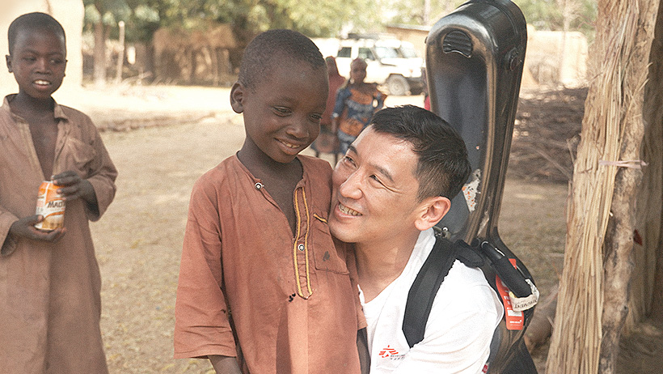
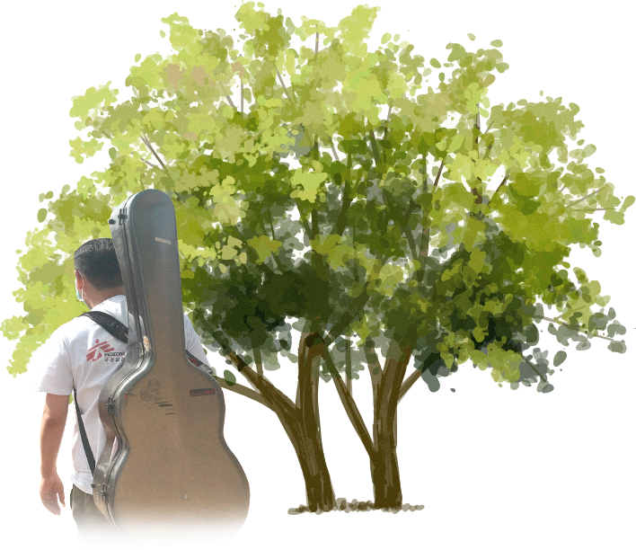
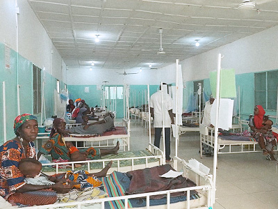
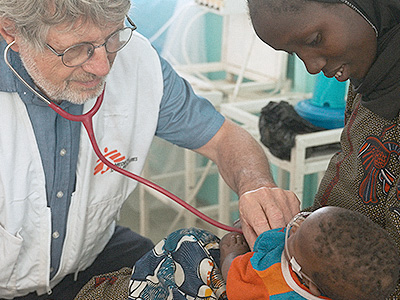
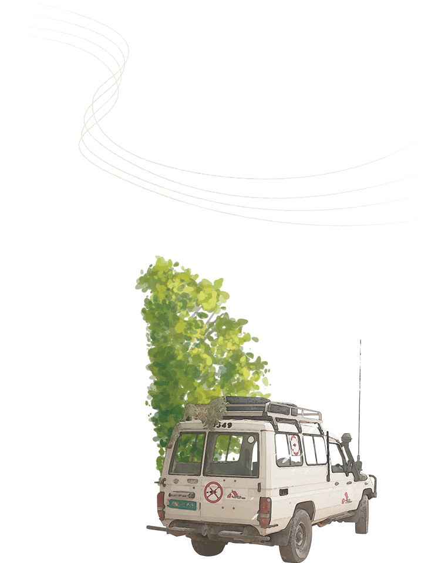
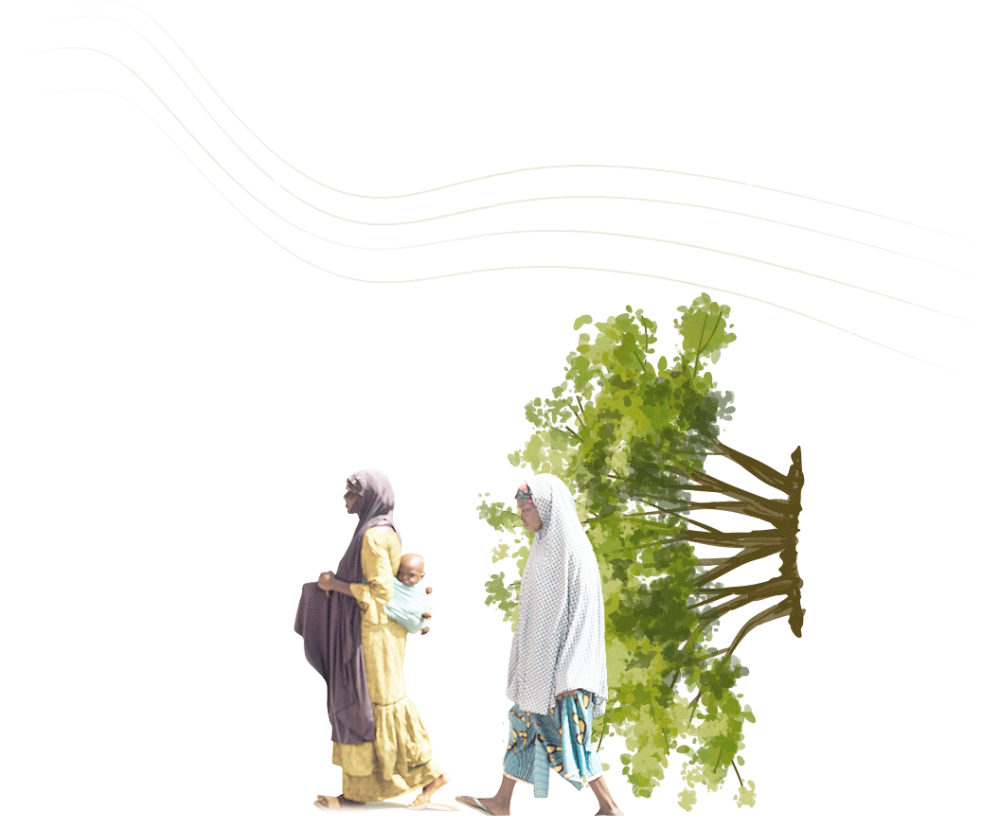
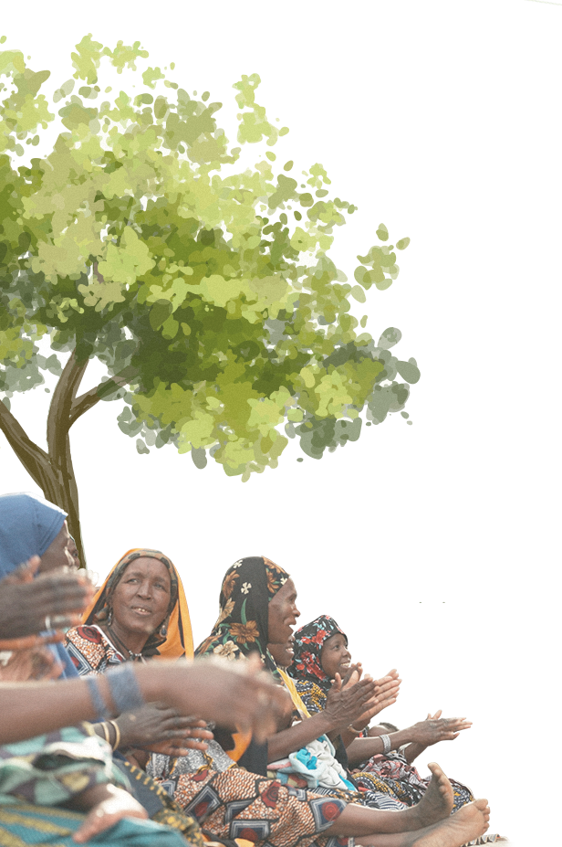

MORNING SHINE
Denis Sungho국경없는의사회 X 드니성호 : 새벽을 밝히는 빛
안녕하세요, 국경없는의사회 컴패니언으로 함께하게 된
기타리스트 드니성호입니다.
여러분에게 ‘삶의 의미’란 무엇인가요?

저는 ‘나눔’에 진짜 의미가 있다고 생각합니다.
자신만을 위해 살아가는 것은 아무 의미가 없어요.
균형있는 삶을 위해 나눔을 실천해 온 저는,
제가 가진 재능을 다른 사람들과 더 적극적으로 나누기 위해 ‘컴패니언’이 되었습니다.
음악가로서 구호 현장의 사람들이 제 음악으로 잠시나마 마음의 평화를 되찾길 바랐고,
컴패니언으로 제 음악을 통해 도움이 필요한 현장의 상황을 알리고
더 많은 사람들이 관심을 갖길 바랐습니다.



현장에서 지켜본 국경없는의사회는, 어려움에 놓인 ‘타인’을 기꺼이 도와
세상의 균형을 이뤄내기 위해 헌신하는 사람들이었어요.
세상에서 가장 아름다운 존재로 보였습니다.
구호 활동가와 사무소 직원들의 헌신을 보고
진정한 삶의 의미란 베풀고 나누는 것임을 다시금 되새길 수 있었고,
환자들의 치유 과정에 함께하고자 음악이 가진 치유의 힘을 믿고 연주를 시작했습니다.


마치 아이들의 웃음과도 같은 순수하고 밝은 멜로디의 이 곡은
‘아름다움과 감사함이 폭력에 대항해 승리를 거둔다’ 는 메세지를 담고 있으며,
국경없는의사회를 위해 따스한 위로가 되고 희망이 가득찬 음악으로 헌정하고 싶었습니다.
더 정직하고 깊이있는 음악가가 되어야겠다는
사명감과 책임감을 갖게 되더군요.

앞으로도 국경없는의사회와 함께
세상을 밝히고, 희망을 나누겠습니다.
무력분쟁, 자연재해, 질병, 기아 등으로 고통받는 이들에게 차별없는 의료지원을
제공하는 국경없는의사회를 보니, 많은 사람들과 국경없는의사회의 활동을 공유하고 소통하는 것이
제 역할이자 소명이라는 생각을 더 굳건히 하게 되었습니다.